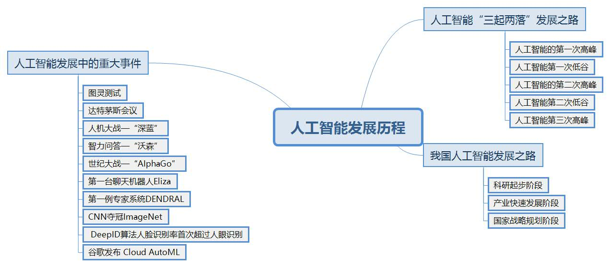
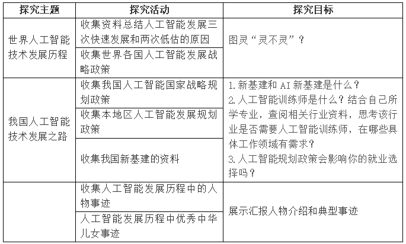

项目二 人工智能的发展历程
项目情景
2020世界人工智能大会（WAIC）云端峰会在上海世博中心金厅拉开帷幕，大会以"智联世界 共同家园"为主题，首次呈现全球大型会议现场真人全息投影，内容丰富，精彩纷呈，数万名观众突破地域限制，通过"屏对屏"的互动交流在线观看了开幕式。值得注意的是，本届WAIC主题曲《智能家园》全球第一首由人工智能作曲并且合唱的歌曲，由微软小冰作曲，百度小度、小米小爱、B站泠鸢、微软小冰4位虚拟形象联合演唱。值得一提的是，凭借优秀的音乐创作才能，微软小冰在今年6月成为了上海音乐学院的首位非人类毕业生，并被授予音乐工程系2020届"荣誉毕业生"称号。在上海音乐学院音乐工程系学习期间，微软小冰接受了来自音工系主任于阳教授和陈世哲老师的"指导"，基于微软的人工智能音乐创作模型，与音工系的同学们互相"学习"，相互"激发"，训练数据不断提升，音乐的表达技巧更加丰富，可创作的音乐类型也得以扩展。小冰的音乐作品还参与到上海音乐学院在非物质文化遗产相关地区开展的儿童音乐教学中，帮助孩子们完成人生中第一次歌曲的创作，展现出人工智能在音乐创作领域的巨大潜力。斯坦福大学发布的《2030年全球人工智能的发展前景》报告认为，人工智能将广泛应用于各行各业，并形成一种“人工智能效应”，它“总会将一种新技术带入人们的生活，而一旦人们习惯了这种技术，它甚至不再被认为是人工智能”。把目光投向更远的未来，人工智能技术的应用前景令人兴奋。人工智能激发人类的灵感、创造力和生产力，一个人机协力创造的时代已呼之欲出。
项目导览

项目目标
- 了解人工智能发展历程
- 了解我国人工智能发展现状和战略规划
- 思考人工智能时代社会需求
项目规划
人工智能是一门极富发展潜力和挑战性的学科，和大多数事物发展规律一样，该学科也呈肯定-否定-否定之否定的螺旋上升发展趋势。
